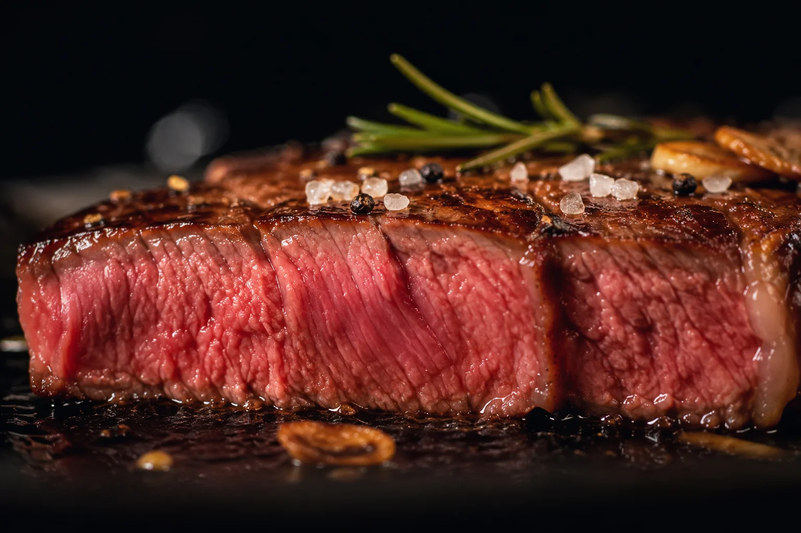
厳選牛の炭火焼き
香ばしい焼き目と、肉本来の旨みを味わう看板料理。
価格は店頭でご案内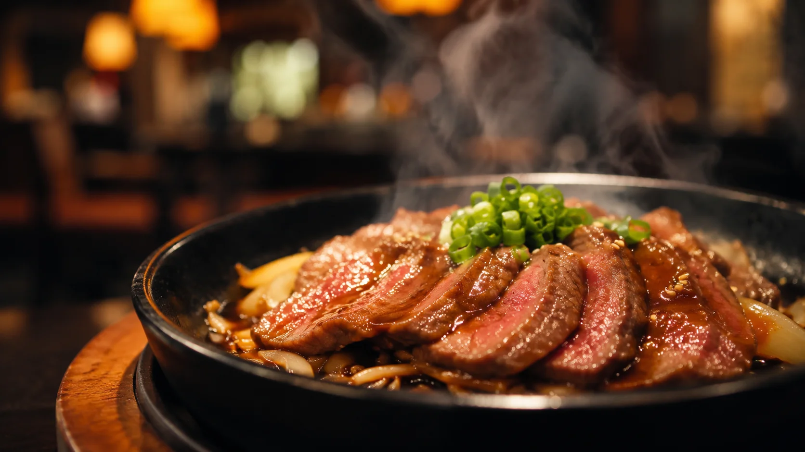
肉の個性は、産地や部位、熟成によって一つひとつ異なります。肉肉亭では、その日の素材を料理人が見極め、香りと旨みが最も引き立つ火入れで仕上げます。
派手さではなく、もう一度食べたくなる奥行きを。器、空間、おもてなしまで丁寧に整えてお迎えします。
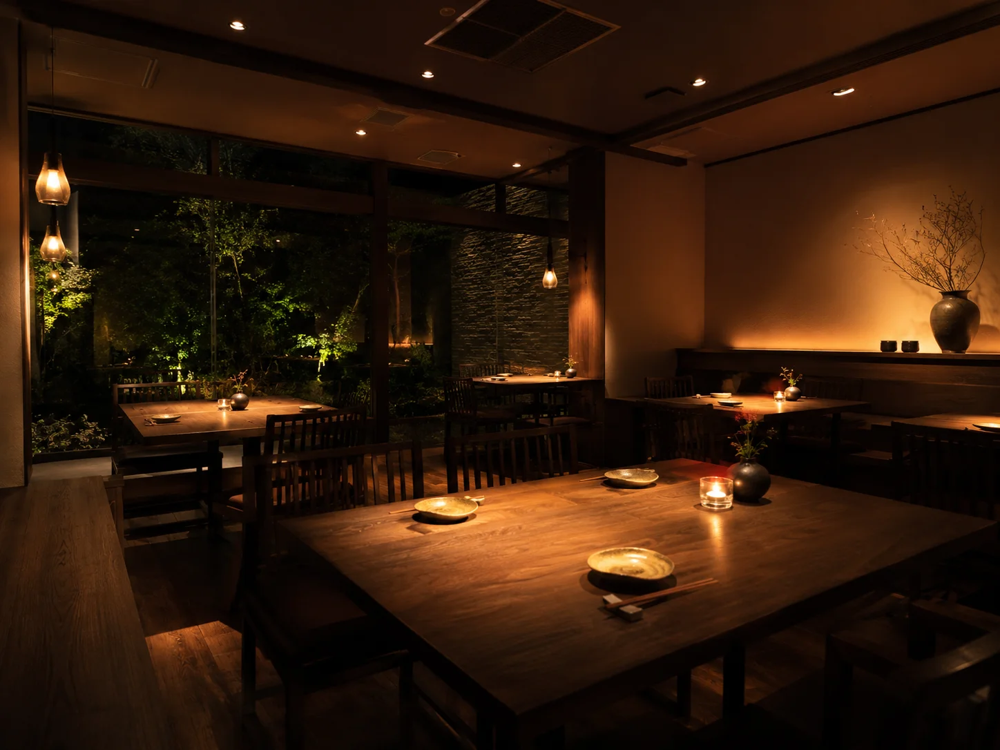
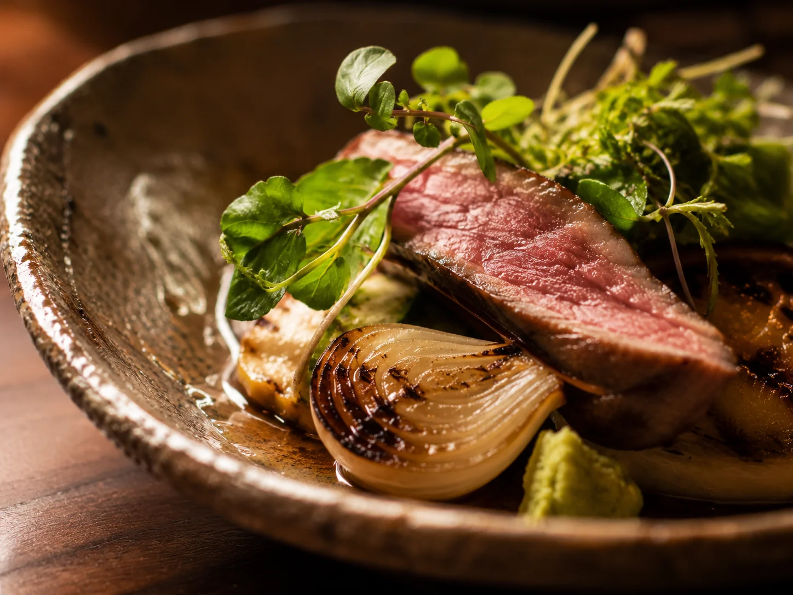
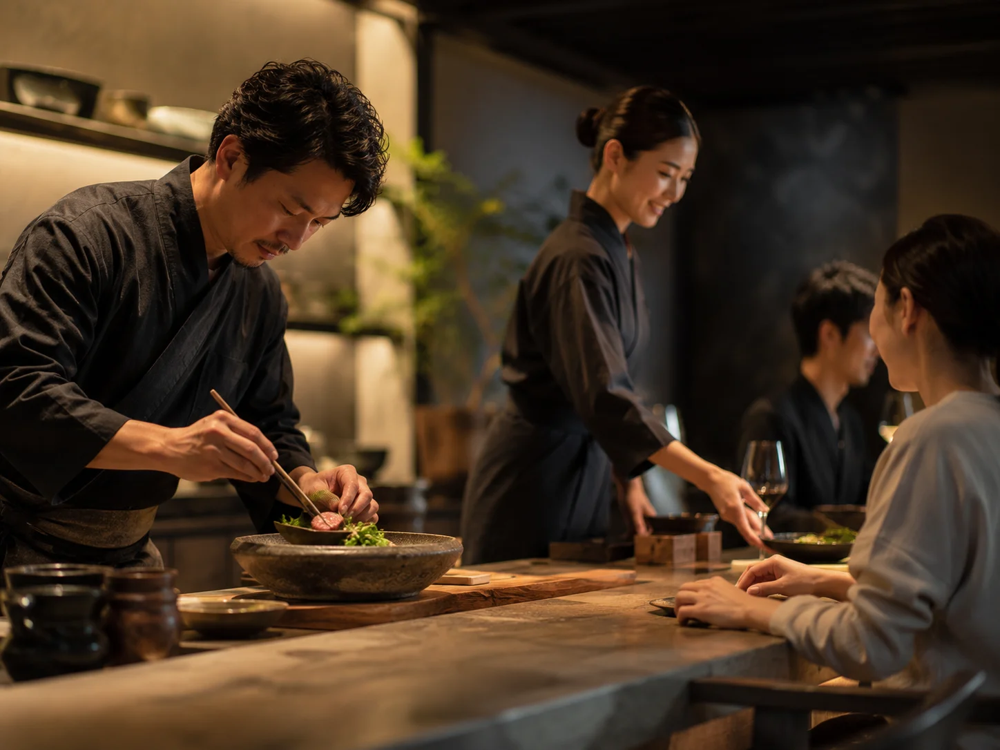
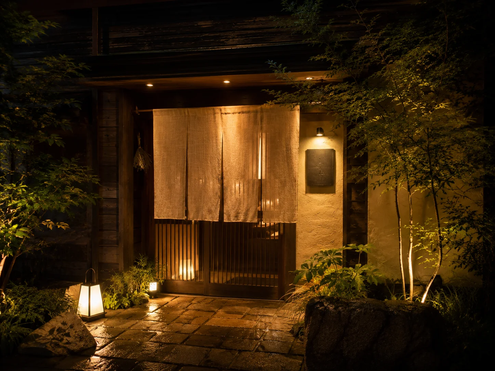
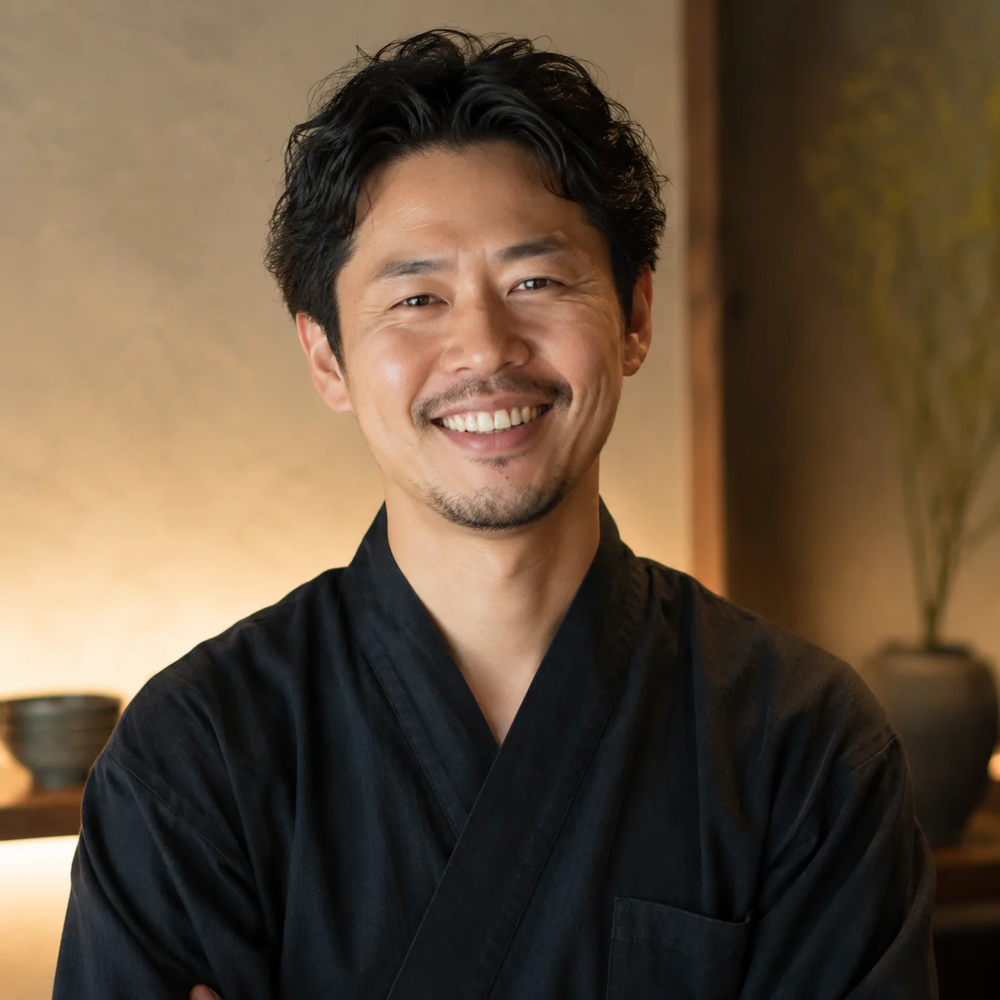
落ち着いた空間と丁寧な料理で、ゆっくり過ごせました。また伺いたいです。
40代・男性／掲載例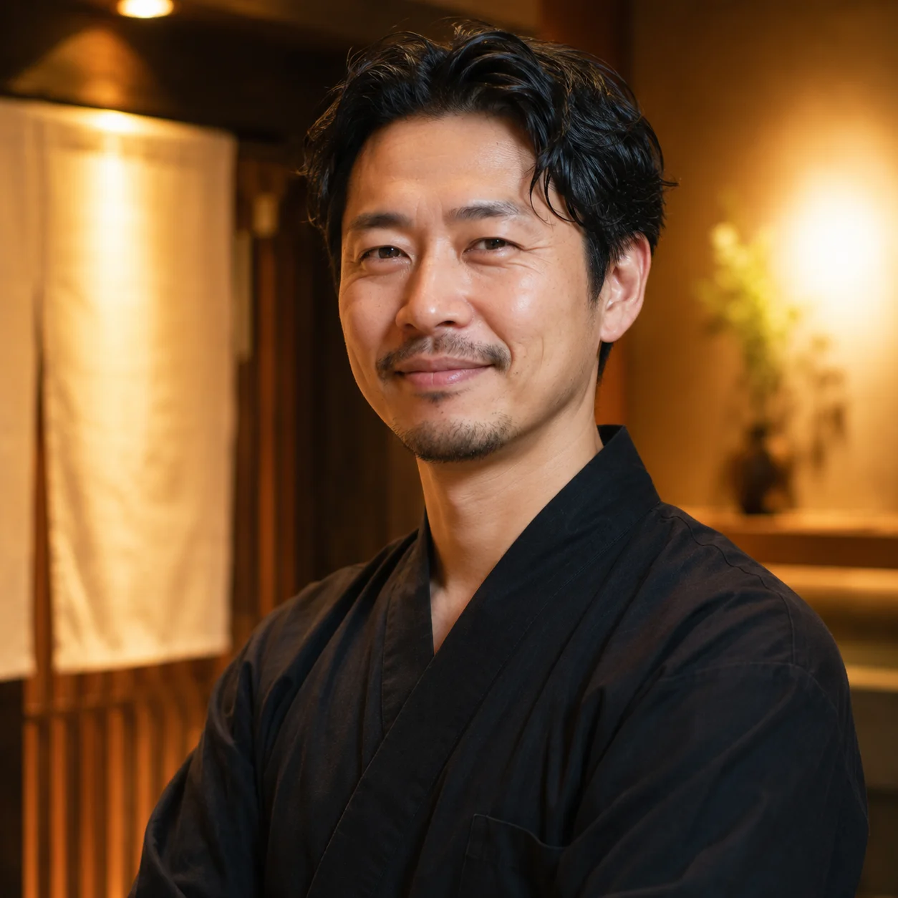
焼き加減が素晴らしく、一皿ごとの説明も丁寧。遠方からでも訪れたいお店です。
30代・女性／掲載例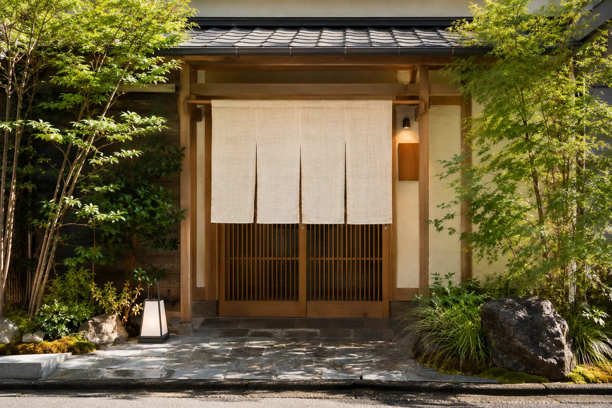
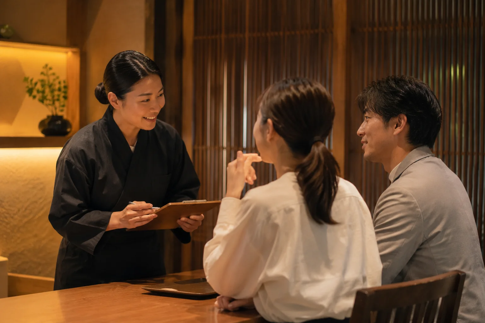
確実にお席をご用意するため、事前のご予約をおすすめしています。
ご予約時にお知らせください。可能な範囲で内容を調整します。
はい。ご希望があれば、ご予約時に用途をお聞かせください。
お席の状況などを確認しますので、事前にお問い合わせください。
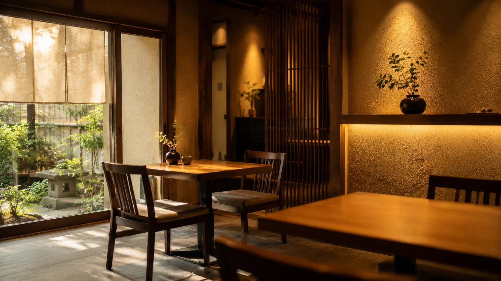